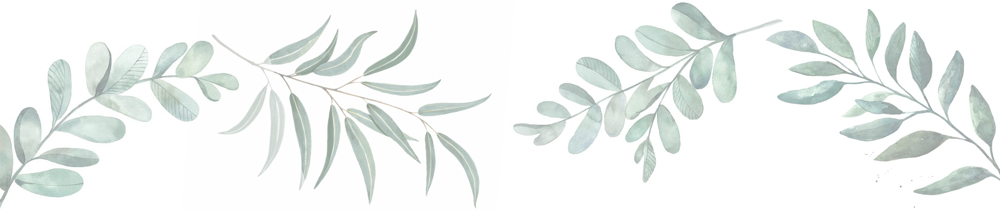

TENDINȚE ACTUALE
Reamenajarea locuinței noastre este un proces important, care trebuie planificat pana la cele mai mici detalii. Inainte sa ne apucam de treaba, cercetam piata, ultimele noutati in materie de design interior si ne calculam bugetul. Site-urile de specialitate sunt cele care ne arata ultimele tendinte si ne ajuta sa luam deciziile cele mai inspirate.
Este important sa ținem cont de ele, desi trebuie sa avem in vedere faptul ca le putem adapta in functie de propriile gusturi, de mobila sau de electrocasnicele pe care le avem deja in casa. Sfatul principal pe care il avem de la designerii de interior faimosi este ca anul acesta predomina amenajarile neconventionale, cu mai multe texturi, culori si modele de decor.
Această artă de exprimare a ideilor şi sentimentelor într-o formă aleasă, personală, STILUL, este un mod de manifestare exterioară a ceea ce suntem în interior, o extensie a personalităţii noastre. Este ansamblul particularităţilor de manifestare specifice unui individ, felul nostru de a fi, de a acţiona, şi de a ne comporta. Dar oare este ceva cu care ne naştem, ceva cu care ne deprindem pe parscurs, este ceva concret, realizabil sau trebuie să urmăm nişte instrucţiuni pentru a avea stil ? Unii or să răspundă da, alţii nu, se poate discuta mult asupra acestui aspect, dar fără îndoială veţi fi de acord cu mine că în primul rând trebuie să fim siguri că îl avem, şi apoi să fim siguri că ni-l păstrăm.
Stilul în design interior poate ţine de multe lucruri, dar în general se rezumă la capacitatea de a crea un interior de bun gust, armonios, echilibrat, confortabil, practic, estetic, unitar, adică, impresionant şi memorabil. Stilul în design, ca şi stilul arhitectural, este un concept vast, destul de complicat de definit.
